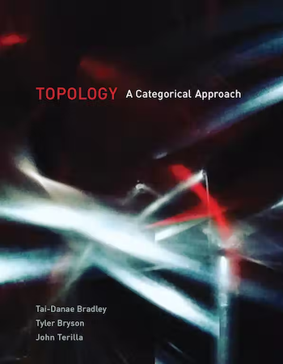

MIT Press
Topology — A Categorical Approach
A graduate-level textbook that presents basic topology from the perspective of category theory.
Open access — chapter PDFs Buy from MIT Press YouTube @topology_categorical
English edition cover art by London Tsai.
Chapters
Table of contents · open access
Playlist
Short videos that supplement the material.
- What is topology?
- The subspace topology
- Paths
- Compact and Hausdorff
- Filters and Ultrafilters (Part I: no topology)
- Filters and Ultrafilters (Part II: convergence and topological properties)
- Categorical limits and colimits are unique
- Compactifications
- Exponential Topologies
- The Seifert Van Kampen Theorem
- Covering Spaces (Part I: intro and based covers)
- The category of G-Sets
- Covering Spaces (Part II: the big picture)
Reviews
- Notices of the AMS Sept 2022
- MAA Reviews July 2021